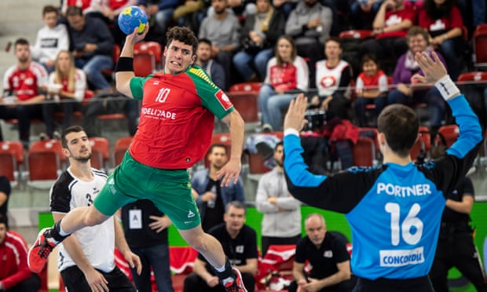

| Strap in for the Super Bowl of Masonry: 2019 in alternative sports |  |
|
Perhaps it’s time some of sport’s more overlooked events had their chance to shine in 2019. World Championship Scotch Pie Awards, anyone? At the start of what is going to be, at least numerically speaking, an odd year, we look ahead to 12 months with no men’s football World Cup or European Championship; a time when, away from the lush pastures of the world’s most popular and attention-demanding sport, the often icy and ignored playing fields of a few different disciplines can finally receive the focus they deserve. The men’s Cricket World Cup starts in May and the rugby version in September, but there is no need to go so long in search of global competition when alternative events already abound like so much January snowfall. Starting with the Men’s Handball World Championship, co-hosted by “the two handball-loving countries of Germany and Denmark”, which starts on Thursday. For all that the event is about pitting nation against nation in very literally hand-to-hand combat, it is imbued with a spirit of cooperation that does not end with the harmonious hosts. The German singer Dominik Klein – not to be confused with the German international handball player Dominik Klein, even though he seems to have been chosen quite deliberately for that purpose – collaborated with the Danish DJ Kongsted to record the official song, the suitably energetic Stand Up Stand Out (“Full arenas and the best handball in the world need a song that gets us all excited and ready to party,” says Klein) while the mascot was designed “partly by fans” after a global crowdsourcing initiative. This might have been a tactical error. They ended up with a moon-faced humanoid called Stan, who looks like Frank Sidebottom has just joined the Power Rangers. Stan, it turns out, is a visitor from the fictional planet GD19 where “most days we just celebrate, dance and sing”. The German handball association started its press release introducing Stan with the assertion that “mascots have always been born of strange ideas” and it is certainly true of theirs. January, however, is full of events that do not need an outsized alien to get people muttering about strange ideas. Take the World Ice Fishing Championship, which starts in Batak, Bulgaria, in a fortnight, and involves contestants drilling access to a frozen lake and attempting to coax fish from its frigid depths by rapidly wiggling their miniature rods. “This sport is very interesting,” said the Russian Nikolai Volodin after he came 76th in 2017. “Chess on ice, you could say.” More… |